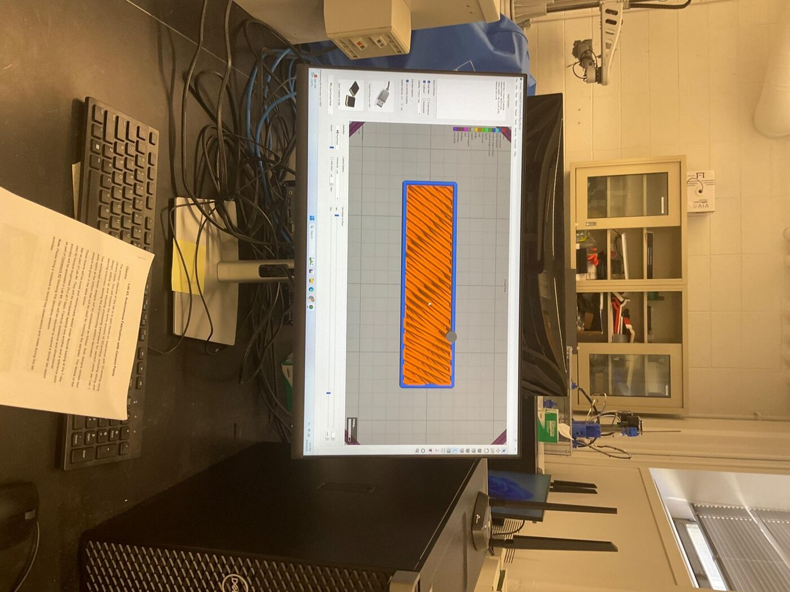
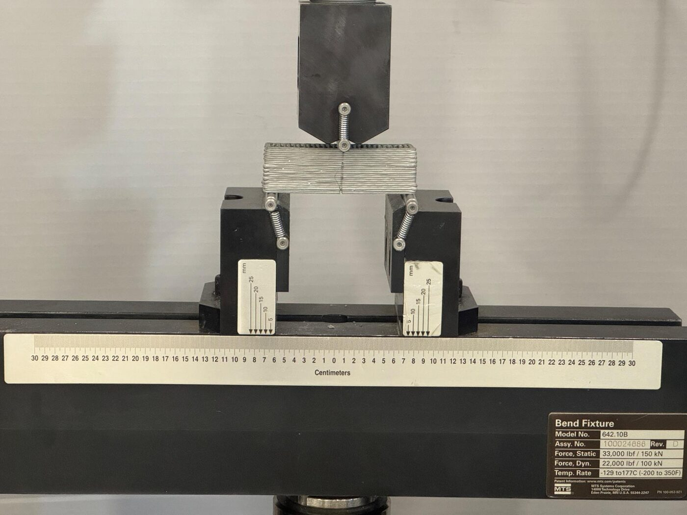
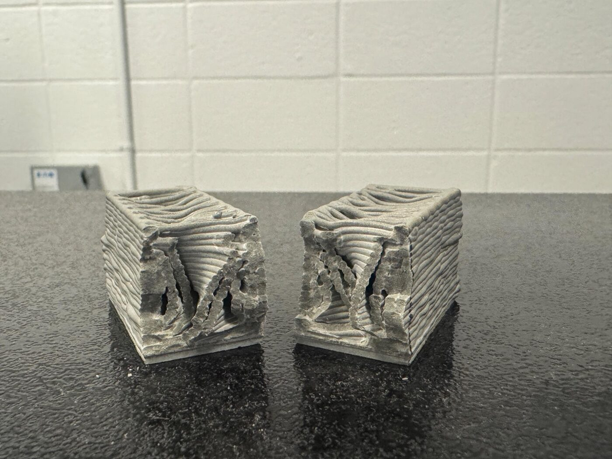
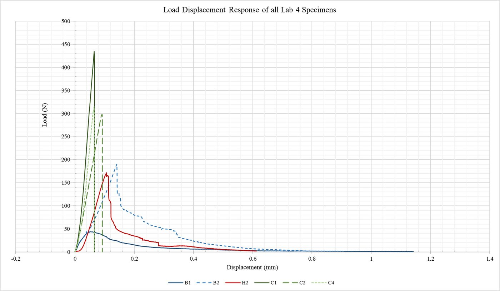
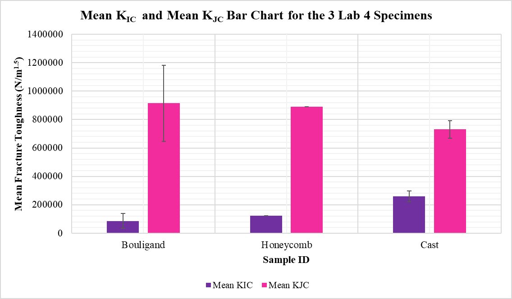
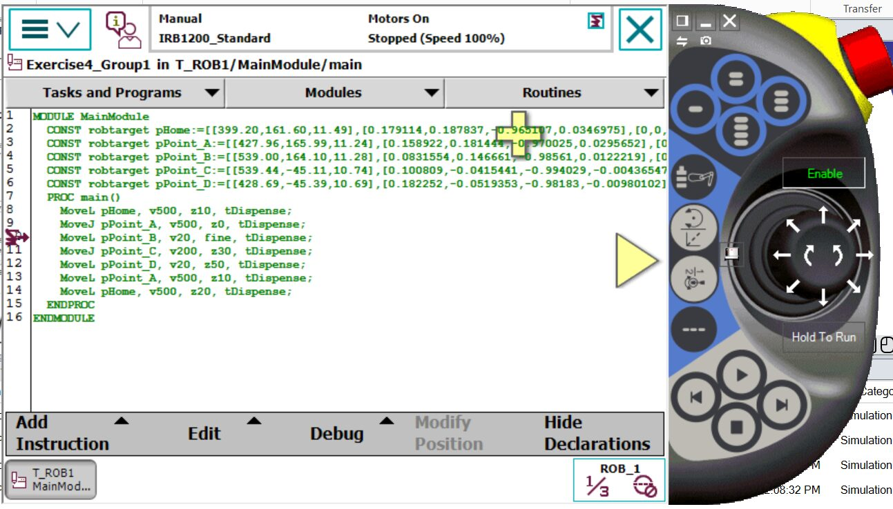
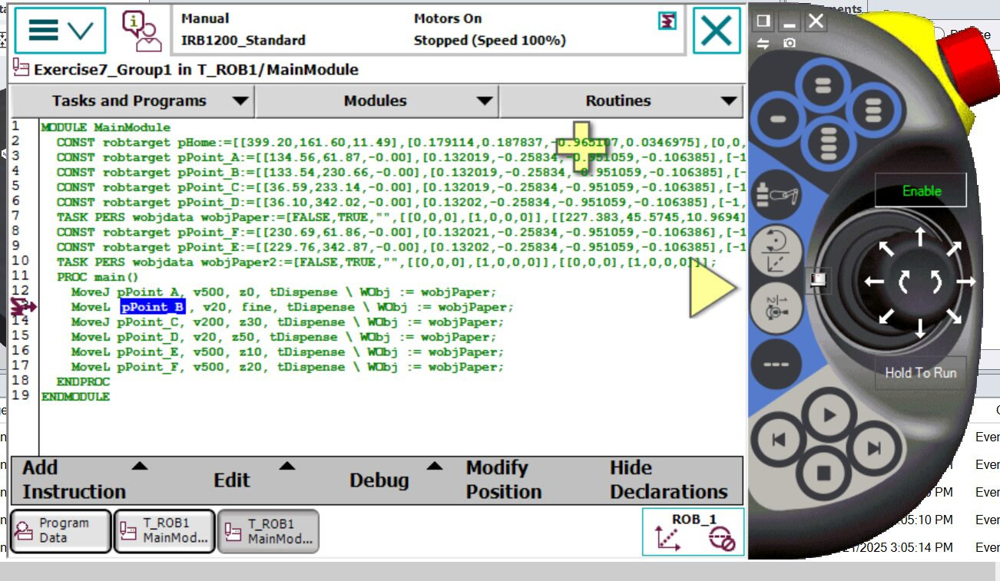
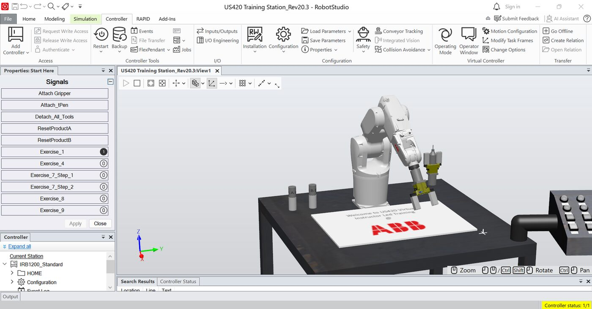
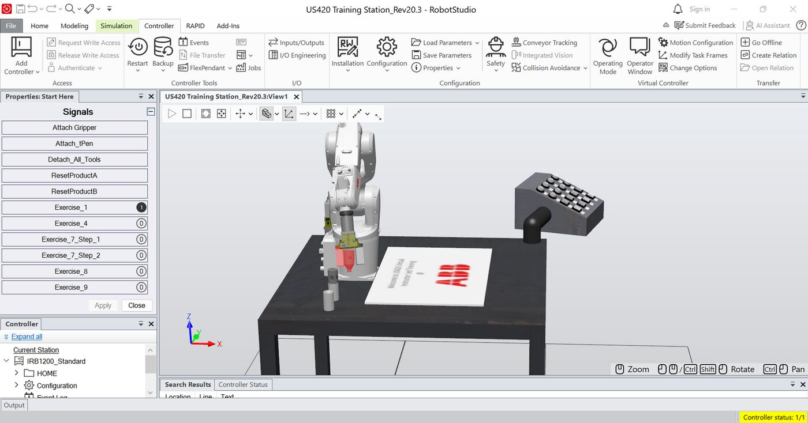

CEE 374 Autonomous Fabrication & Robotics
Robotic additive manufacturing
Print concrete in a helix, then break it on purpose
Group 3, assigned the Bouligand architecture. Prof. Reza Moini. Rheology, printing, and fracture testing across four labs; ABB arm programming alongside.
Cement paste is a material you have to earn: too stiff and it clogs, too loose and it slumps. I printed a bio-inspired helical beam out of it, then loaded it to failure to find out whether the architecture was worth the trouble. It was — but not in the way the peak load suggests.
Getting the paste printable
Before printing anything, we characterized three mixes on a rheometer. Static yield stress — what holds a layer up — came out at 258, 147, and 135 Pa; dynamic yield stress and viscosity, which govern whether it extrudes at all, ran the other way.
That trade is the whole problem. P1 had nearly twice the buildability (20.7 mm maximum layer height against 10.8 mm) and was the stiffest to push through a nozzle. I recommended P1 anyway: shape retention is harder to recover from than extrusion pressure.
Printing it
Cement sifted to 150 µm, vacuum-mixed in two stages to pull the air out, loaded into a 90 ml syringe on a stepper-driven extruder. Two solid layers at the base for notching, then 21 layers rotating 9° each.
The helix fights you. Each rotation reduces the support the layer beneath offers, and the middle of the beam slumped. I raised extrusion to 102% at layer 14 and 103% at layer 19 to close the gaps opening up — which helped, and did not fix the air voids. That variability shows up later in the data, which is the honest link between process and property.
Breaking it
Single-edge notch bending on an MTS Criterion, 69 mm span, displacement-controlled at 0.05 mm/min — slow enough that the crack has time to interact with the architecture rather than outrun it.
For crack initiation, cast wins: mean Kᴵᶜ of 260 kN/m^1.5 against 124 for honeycomb and 86 for Bouligand. Dense uniform material resists a crack starting. But energy-equivalent toughness inverts the order — Bouligand 915, honeycomb 891, cast 730 kN/m^1.5 — because the printed beams keep carrying load long after the peak.
Normalize by density and the printed beams pull further ahead: they are 25–30% lighter than cast. The fracture surfaces show why. The crack doesn't run straight through a Bouligand beam; it twists along the rotated filament interfaces, and every twist costs energy.
What it cost
The Bouligand standard deviation is enormous — 267 against 62 for cast. Same design, same day, wildly different numbers, traced to filament width, voids, and interlayer bonding rather than to the architecture. Notch sharpness and roller seating add their own scatter.
So the finding is really two findings: the architecture works, and process control is what stands between the concept and a usable material.
Where the theory oversells
Euler buckling puts a hollow cylinder at 241 printable layers and a thin wall at 81 about its weak axis. Set against the yielding limit of about 91 layers, the cylinder yields first and the wall buckles first — different failure modes for the same paste, decided by geometry.
But elastic buckling theory assumes ideal geometry and rate-independent behaviour, and the literature has it overestimating buildability by 104–210%. Running the thixotropy numbers makes that concrete: for yielding and buckling to arrive together you would print at 8.79 mm/min, against the 750 mm/min we actually used. The structural build-up rate cannot keep up. Worth knowing before quoting a limiting height from an equation.
The arm half of the course
Alongside the cement work: ABB IRB1200 programming in RobotStudio and on the FlexPendant — RAPID motion, work objects, tool frames, gripper I/O, and the tests that matter operationally, like whether the arm resumes cleanly after an E-stop, or follows the path correctly after the fixture moves and the work object is redefined. It does.
My term paper proposed closing the loop between those two halves: keeping CAD-grade conformal path planning while a safety-bounded reinforcement-learning layer makes micro-adjustments to heading, lane spacing, and feed rate from multi-sensor feedback, with local replanning when deviation crosses a threshold. The gaps I was patching by hand at layer 14 are exactly what such a controller should catch.
Documentation

Drop file atassets/robotic-am/printing.jpg

Drop file atassets/robotic-am/slicing-preview.jpg

Drop file atassets/robotic-am/senb-setup.jpg

Drop file atassets/robotic-am/fracture-surfaces.jpg

Drop file atassets/robotic-am/load-displacement.jpg

Drop file atassets/robotic-am/toughness-bar.jpg
Drop file atassets/robotic-am/toughness-normalized.jpg

Drop file atassets/robotic-am/rapid-code.jpg

Drop file atassets/robotic-am/workobject-code.jpg

Drop file atassets/robotic-am/abb-gripper.jpg

Drop file atassets/robotic-am/abb-pick.jpg